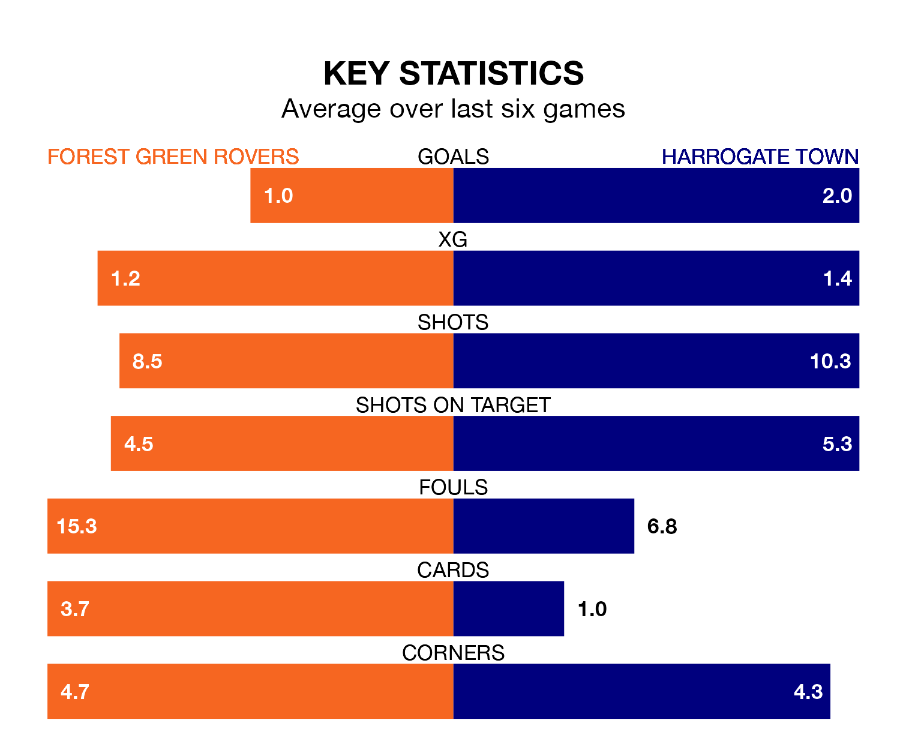

Forest Green Rovers face Harrogate Town at the Bolt New Lawn on Saturday looking to secure a first win in 11 EFL League Two games.
The Green have lost five and drawn five matches since they last earned three points – against Crawley Town on October 28.
They face a Harrogate side who have won five and drawn three over that time.
Forest Green are 23rd in the table after 25 games, of which they have won four and drawn six, earning 18 points.
Harrogate are 11 places ahead of Rovers in 12th, with 11 wins and four draws putting them on 37 points.
With 26 goals in 25 games so far this season, the Green are the league's second-lowest scorers with 1.0 goals per game. And they are conceding more than average, letting in 46 goals at a rate of 1.8 per game.
Town are also below average scorers, with 1.2 goals per game, compared to a league average of 1.5. They have conceded 1.3 goals per game.
Over the last two years, Forest Green and Harrogate have played each other twice. They won one each.
Their last meeting was on August 12, when Forest Green won 1-0 away.
Forest Green's last match was on January 6, a 2-2 draw against Salford City, with Charlie McCann and Mathew Stevens getting the goals for the Green.
Harrogate beat Doncaster Rovers 3-1 last time out, also on January 6, with Abraham Odoh, James Daly and Samuel Folarin on the scoresheet.
Saturday's match will be refereed by Chris Pollard, who has taken charge of three EFL League Two games so far this season, issuing one red card and booking 14 players. He has not awarded any penalties.
He is yet to oversee a match featuring either Forest Green or Harrogate this season.
Updated: 13:38 (UTC), 10/01/24